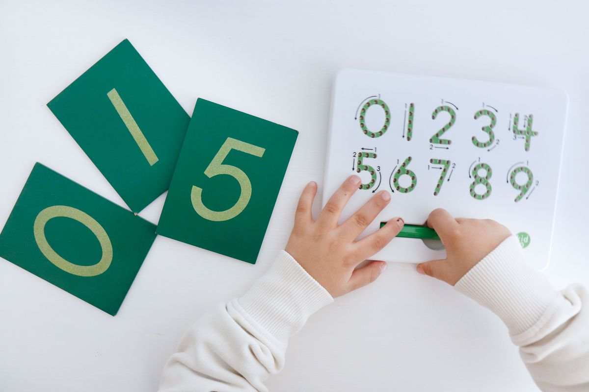
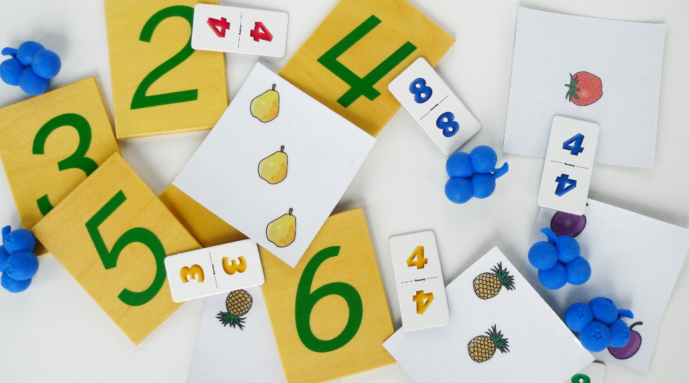
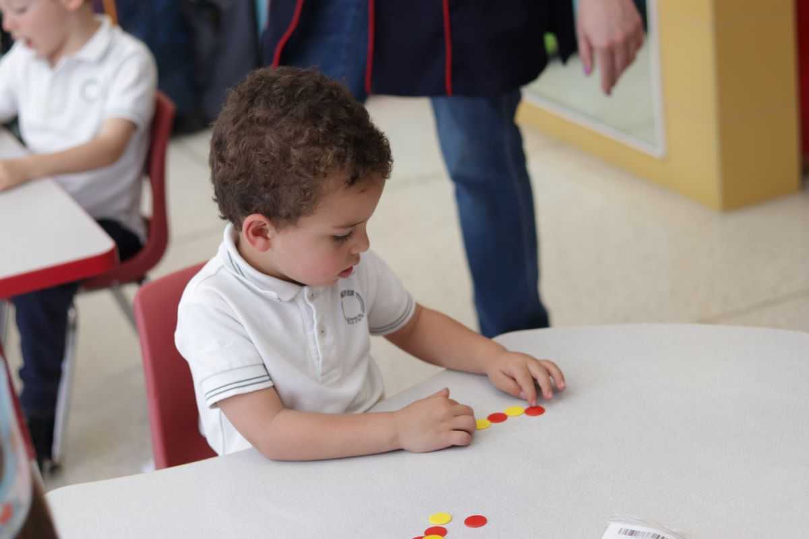

-
Bienvenido a ClassKit
Este sitio web fue diseñado con la intención de brindar recursos interactivos y materiales didácticos especialmente diseñados para docentes de Educación Preescolar y Primaria.
Aquí encontrarás herramientas prácticas, divertidas y alineadas con el marco educativo vigente, pensadas para enriquecer tus clases y captar la atención de tus estudiantes de manera creativa.Queremos que este sea un lugar donde la innovación y el aprendizaje se encuentren, facilitándote el acceso a actividades que estimulen el pensamiento, la participación y la imaginación de niñas y niños.
-
Preescolar
En esta sección encontrarás actividades diseñadas especialmente para niñas y niños en edad preescolar.
Sabemos que el aprendizaje en esta etapa se construye a través del juego, la curiosidad y la interacción con el entorno, por eso cada recurso ha sido pensado para estimular el desarrollo integral de forma divertida y significativa.
Primer grado
¡Observa el mundo con figuras!
.jpg) Empezar
EmpezarRefuerza el reconocimiento y asociación de figuras, números y vocales de una manera divertida con los estudiantes.
Para esta actividad, en los niveles de figuras y vocales, el usuario deberá relacionar la imagen completa con su silueta correspondiente. En el nivel de números, el usuario deberá relacionar el número con su representación visual.
Segundo grado
¡Explora el mundo a través del sonido!
EmpezarDescubre una experiencia interactiva donde los estudiantes reconocerán sonidos del entorno de forma divertida y educativa.
En cada ejercicio, compuesto por cinco etapas, explorarán sonidos de animales, intrumentos y transportes. Al iniciar, se presentará un sonido y se mostrarán tres imágenes como posibles respuestas. El usuario deberá escuchar con atención y seleccionar la imagen que represente al sonido escuchado.
Tercer grado
¡Aprendemos a leer juntos!
EmpezarCon ayuda de globos flotantes, los estudiantes reforzarán el reconocimiento de letras y el orden alfabético.
Al iniciar, una serie de globos comenzarán a ascender de abajo hacia arriba de la pantalla. El usuario deberá hacer clic en cada uno siguiendo el orden del alfabeto o identificando una letra específica.
Primaria
En esta sección encontrarás actividades diseñadas para estudiantes de nivel primaria.
Sabemos que en esta estapa, el aprendizaje se adquiere a través de la práctica y la exploración. Es por esto que cada recurso ha sido creado para fortalecer habilidades clave en áreas como matemáticas y pensamiento lógico, de una manera dinámica.
Primer grado
¡Descubre las sucesiones numéricas!
EmpezarA través de sucesiones númericas, desarrolla el pensamiento lógico y la atención de los estudiantes.
En esta actividad, se presentará una secesión numérica y tres posibles opciones, el usuario deberá identificar el número siguiente y seleccionarlo.
Segundo grado
¡Encuentra el orden correcto!
EmpezarRefuerza el pensamiento lógico y la atención de los estudiantes con ayuda de reconocimiento de patrones visuales.
Al iniciar, se presentará una serie incompleta de figuras con un patrón visual y tres posibles opciones, el usuario deberá identificar qué figura sigue a continuación y seleccionarla.
Tercer grado
¡Repartamos de forma equitativa!
EmpezarCon ayuda de unos dulces, refuerza el tema de reparto equitativo con los estudiantes.
En esta actividad, el usuario deberá repartir cierta cantidad de dulces de manera equitativa en las cajas que se le presentan. Para posteriormente introducir, de manera correcta, el número de dulces que hay en cada caja.
¿Qué es ClassKit?
Es un sitio web hecho por estudiantes del IPN, orientado a compartir recursos interactivos para que Docentes del nivel Primaria y Prescolar puedan utilizar durante sus clases mientas cubren con el marco indicado
¿Quiénes somos?
Somos un equipo comprometido con la educación que cree en el poder de los recursos digitales para transformar el aprendizaje. Este sitio web es diseñado con el propósito de brindar a las y los docentes de Educación Preescolar y Primaria herramientas interactivas que enriquezcan sus clases y motiven a sus estudiantes.
Nuestro objetivo es apoyar la labor docente mediante materiales accesibles, divertidos y alineados con los contenidos del marco curricular vigente, fomentando una enseñanza creativa, significativa e inclusiva.
Creemos que aprender debe ser una experiencia activa, estimulante y respetuosa del ritmo de cada niño y niña. Por eso, cada recurso ha sido pensado con cuidado para acompañar el proceso educativo dentro del aula.
Misión
Facilitar el aprendizaje de los niños a través de herramientas digitales por medio del desarrollo de una aplicación web, la cual está orientada al desarrollo de actividades educativas interactivas, basados en contenidos temáticos de la Secretaria de Educación Publica (SEP) del nivel primaria y preescolar.

Visión
Ser un referente en la creación y difusión de recursos digitales educativos en México, ofreciendo a docentes de nivel Preescolar y Primaria una plataforma innovadora, accesible y alineada con el marco curricular de la SEP, que potencie el aprendizaje significativo, inclusivo y motivador para niñas y niños en su etapa escolar.


.jfif)